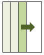

＜直交表生成向けのオプション＞
-algorithm (GF|Xu|all|random|CA) | -a (GF|Xu|all|random|CA)
: select an algorithm <--生成アルゴリズムを選択
-indelimit char | -id char : input-data delimiter (defalut=,) <--入力データ区切り文字
-outdelimit char | -od char : output-data delimiter (defalut=tab) <--出力データ区切り文字
-show | -s : show array information
-way num | -w num : caliculate num-way coverage in -show mode <--詳細情報表示
-noConstraint | -x1 : disable constraint records <--制約条件を使わない
-random | -rd : randomize column for algorithm Xu
-T num : specify repeat count for algorithm Xu
-size num | -sz num : specify row(run) size
-seed | -sd : random seed for algorithm Random
-noD | -xD : do not add (D) for complementation
-Stream | -sm : stream mode
-noStream | -xS : not stream mode
-level num | -l num : level for test parameters
-quiet | -q : no verbose message
入力データの区切り文字は，デフォルトでカンマ(,)ですが，
これを別文字に変えたい場合に指定します
ただし，因子名を区切る ":" は変更できません。
（例） 空白区切り
[hyam@hyam sample]$
OAG -indelimit space
model_file_03.txt
（例） タブ区切り
[hyam@hyam sample]$
OAG -indelimit tab
NOA_file_01.txt
出力データの区切り文字はデフォルトでタブですが
(pictのデフォルトに合わせています)，
これを別文字に変えたい場合に指定します
model_file_01.txt
AAA : a_1,a_2,a_3,a_4 BBB : b_1,b_2 CCC : c_1,c_2
[hyam@hyam sample]$
OAG -outdelimit ,
model_file_01.txt
AAA,BBB,CCC a_1,b_1,c_1 a_1,b_2,c_2 a_2,b_1,c_1 a_2,b_2,c_2 a_3,b_1,c_2 a_3,b_2,c_1 a_4,b_1,c_2 a_4,b_2,c_1
-showをつけると詳細情報を表示します。
・２因子間網羅率，３因子間網羅率
・直交表かどうか，どのくらい直交表に近いか
などを表示します。
[hyam@hyam sample]$
OAG model_file_01.txt -show
## 2-way coverage # coverage rate : 100 % # 2-way combinations : 20 # covered combinations : 20 ## 3-way coverage # coverage rate : 50 % # 3-way combinations : 16 # covered combinations : 8 #-------------------------------------------------------- ## Confirm Array # J2(d) : 36 # L(n) : 36 # ratio : 1
"Confirm Array"で出力している"J2(d)"，"L(n)"は，
以下の2.1の情報を計算しています。
rateが1の場合は直交表です。1でなければ直交表ではありません。
また，1に近いほど直交性が高くなります。
http://www.stat.ucla.edu/~hqxu/pub/Xu2002.pdf
An Algorithm for Constructing Orthogonal and
Nearly-Orthogonal Arrays
With Mixed Levels and Small Runs
-showをつけた場合の詳細情報で num 因子間網羅率まで計算します。
（-showがデフォルトで表示するのは，2または3因子間網羅率です）
model_file_01.txt
AAA : a_1,a_2,a_3 BBB : b_1,b_2,b_3 CCC : c_1,c_2,c_3 DDD : d_1,d_2,d_3 EEE : e_1,e_2,e_3
[hyam@hyam sample]$
OAG -show -way 5
model_file_01.txt
#-------------------------------------------------------- ## Orthogonal Array ## array data # number of parameters = 5 # test size = 18 #-------------------------------------------------------- ## 2-way coverage # coverage rate : 100 % # 2-way combinations : 90 # covered combinations : 90 ## 3-way coverage # coverage rate : 66 % # 3-way combinations : 270 # covered combinations : 180 ## 4-way coverage # coverage rate : 22 % # 4-way combinations : 405 # covered combinations : 90 ## 5-way coverage # coverage rate : 7 % # 5-way combinations : 243 # covered combinations : 18 #-------------------------------------------------------- ## Confirm Array # J2(d) : 405 # L(n) : 405 # ratio : 1 #-------------------------------------------------------- ## result array AAA BBB CCC DDD EEE a_1 b_1 c_1 d_1 e_1 a_2 b_2 c_2 d_2 e_2 a_3 b_3 c_3 d_3 e_3 a_1 b_1 c_2 d_3 e_2 a_2 b_2 c_3 d_1 e_3 a_3 b_3 c_1 d_2 e_1 a_1 b_2 c_1 d_3 e_3 a_2 b_3 c_2 d_1 e_1 a_3 b_1 c_3 d_2 e_2 a_1 b_3 c_3 d_1 e_2 a_2 b_1 c_1 d_2 e_3 a_3 b_2 c_2 d_3 e_1 a_1 b_2 c_3 d_2 e_1 a_2 b_3 c_1 d_3 e_2 a_3 b_1 c_2 d_1 e_3 a_1 b_3 c_2 d_2 e_3 a_2 b_1 c_3 d_3 e_1 a_3 b_2 c_1 d_1 e_2
使用するアルゴリズムを固定します。
-algorithm を指定しない場合，以下の順で直交表を作成できるか試します
レベルを２と見なして生成します。各パラメタの値の個数が揃っていない場合は，
２のべき乗になるように，自動で補完します。
また，補完した要素には"(D)"をつけます。
model_file_02.txt
AAA : a_1,a_2,a_3 BBB : b_1,b_2 CCC : c_1,c_2
[hyam@hyam sample]$
OAG -algorithm GF
model_file_02.txt
AAA BBB CCC a_1 b_1 c_1 a_1 b_2 c_2 a_2 b_1 c_1 a_2 b_2 c_2 a_3 b_1 c_2 a_3 b_2 c_1 a_1(D) b_1 c_2 a_1(D) b_2 c_1
レベル数はOAG側である程度自動判定しますが，
レベル数を明示的に指定する場合は，-levelオプションを使います。
ダミーレベルを補完したときに，"(D)"をつけません。
model_file_02.txt
AAA : a_1,a_2,a_3 BBB : b_1,b_2 CCC : c_1,c_2
[hyam@hyam sample]$
OAG -algorithm GF
-noD model_file_02.txt
AAA BBB CCC a_1 b_1 c_1 a_1 b_2 c_2 a_2 b_1 c_1 a_2 b_2 c_2 a_3 b_1 c_2 a_3 b_2 c_1 a_1 b_1 c_2 a_1 b_2 c_1
レベル数を明示的に指定します。
[hyam@hyam sample]$
OAG -algorithm GF -level 3
model_file_02.txt
AAA BBB CCC a_1 b_1 c_1 a_1 b_2 c_2 a_1 b_1(D) c_1(D) a_2 b_1 c_2 a_2 b_2 c_1(D) a_2 b_1(D) c_1 a_3 b_1 c_1(D) a_3 b_2 c_1 a_3 b_1(D) c_2
レベルを3にすると，パラメタの数が3のべき乗でないBBBとCCCを，
3のべき乗になるよう補完して生成します。
常にレベル2でダミーレベルの補完ありにしておくと，
どのようなモデルファイルであってもそれなりに生成できます。
OAG -algorithm GF
-level 2 -noD モデルファイル
計算途中の情報を表示しません。
Xuのアルゴリズムを使った場合は，デフォルトでは途中経過を出しています。
（時間がかかる場合があるため）
ただし生成したものが直交表でない場合は，-qオプションをつけていても
J2-Optimalityなどを表示します。
ランダム生成のseedに時間を使います。
このアルゴリズムでは，乱数を使いますが
固定シードのため，条件が同じなら毎回同じ結果になります。
（回帰テストのために，わざとそうしています）
毎回ランダムにする場合は，-TimeSeedオプションをつけてください。
列追加時の，試行回数を指定します（デフォルト10回）
テスト回数（run size）を明示的に与えます（デフォルトは自動計算）
model_file_02.txt
AAA : a_1,a_2,a_3 BBB : b_1,b_2 CCC : c_1,c_2
であれば， ３×２×２＝１２ のように無条件に全組合せを生成します。
モデルファイルによっては件数が膨大になります。
モデルファイルから生成される直交表と同サイズのランダムな配列を生成します。
実際にテストに使った場合の効果を直交表と比べるための用途です。
テスト回数（run size）を明示的に与えます（直交表と同サイズ）
ランダム生成のseedに時間を使います。
テスト件数が膨大となるようなモデルファイルでは，直交表が計算できない場合が多々あります。
その場合でも，-algorithm CAでは生成できる可能性が高いです。
-noStreamの場合，生成したデータを配列に蓄積します。
-Streamの場合，生成したデータをそのまま標準出力に流します。
-algorithm all または random では，-Streamがデフォルトです。
特に-algorithm all では，生成データが大量になる場合があり，-noStreamではメモリ不足になる
可能性があるためです。
ただし，データを蓄積せず流すため，因子間網羅率など-showで出す情報を計算できません。
逆に-algorithm GF または Xuの場合，-streamは選択できません。
これらのアルゴリズムでは，テストケース全体を横に成長させていくからです。
